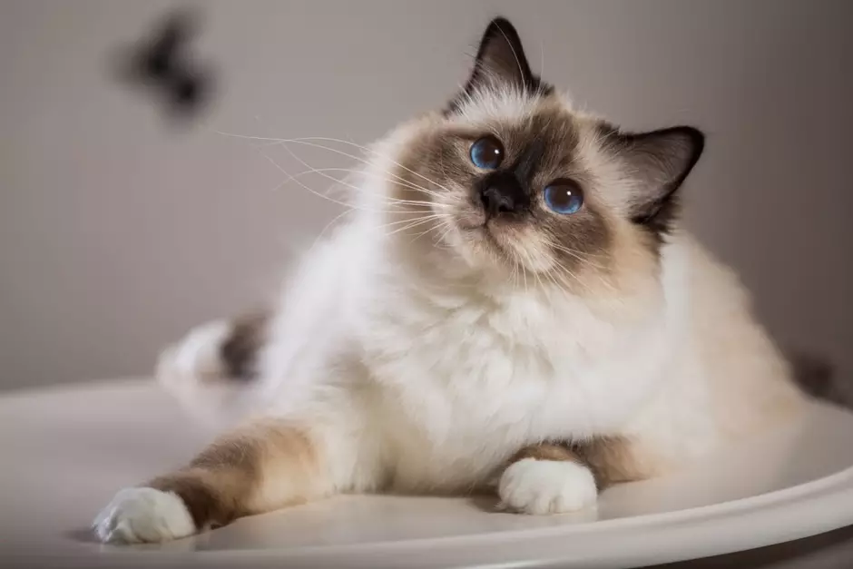
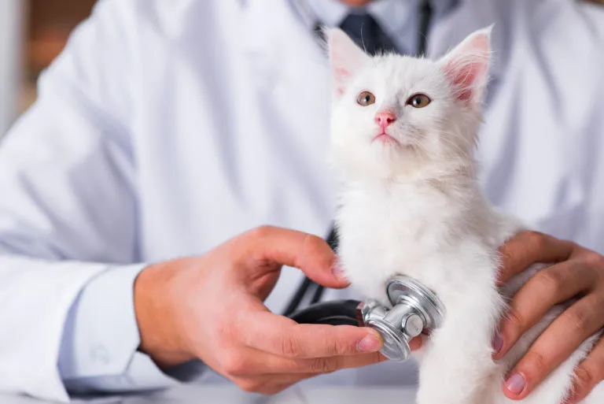

Cuidado exclusivo e especializado para gatos 🐱
Na VidaPet Felina, oferecemos um atendimento pensado exclusivamente para o bem-estar dos felinos, com ambiente tranquilo, técnicas específicas e profissionais altamente capacitados.



Por que escolher uma clínica especializada em gatos?
Gatos possuem comportamentos e necessidades muito diferentes de outros animais. Por isso, o atendimento especializado é essencial para reduzir o estresse e garantir diagnósticos mais precisos.
Na VidaPet Felina, cada detalhe é pensado para proporcionar conforto, segurança e qualidade no atendimento, respeitando a natureza dos felinos em todas as etapas do cuidado.
Nossos serviços 🐾
- Consultas clínicas especializadas em felinos
- Vacinação e prevenção de doenças
- Exames laboratoriais completos
- Internação com ambiente controlado e silencioso
🚨 Atendimento 24h
Sabemos que emergências podem acontecer a qualquer momento. Por isso, nossa clínica oferece atendimento 24 horas para garantir segurança e rapidez em situações críticas.
💙 Nosso compromisso
Mais do que tratar doenças, nosso compromisso é proporcionar qualidade de vida, conforto e bem-estar aos gatos, com um atendimento humanizado e especializado.